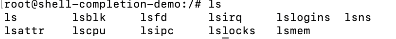
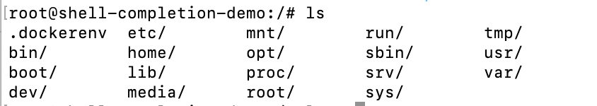
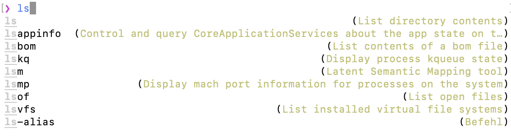
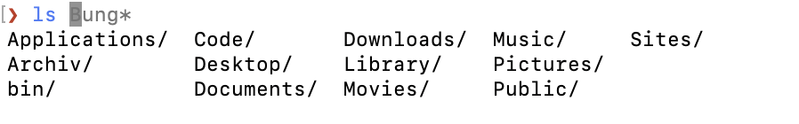
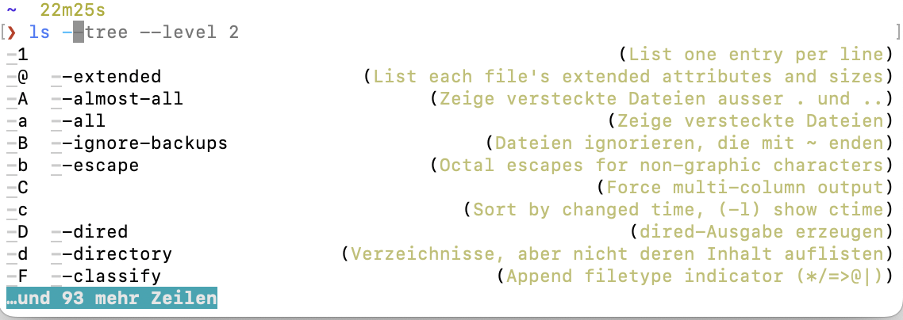
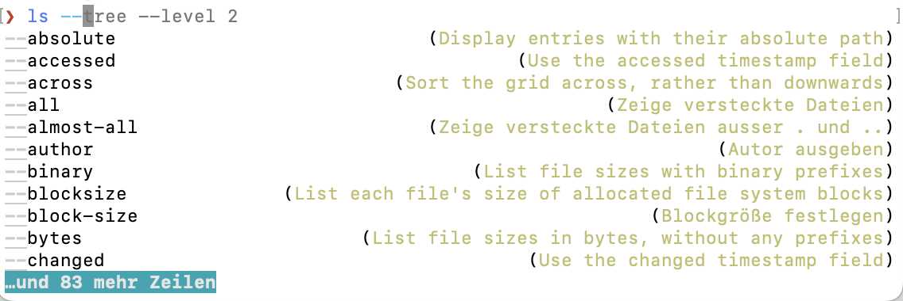

Was ist schlechte Vervollständigung?
Um zu verstehen was ich mit guter Auto-Completion für Shells meine, brauchen wir erst einmal eine Baseline wie eine schlechte Completion aussieht. Das lässt sich sehr gut mit Docker demonstrieren:
docker run --rm -it --hostname shell-completion-demo debian
Erstes Experiment: ls⇥⇥ (kein Leerzeichen vor den Tabs!)

Zeigt alle Kommandos die mit ls anfangen
Zweites Experiment: ls ⇥⇥
Das zeigt bei mir:

Schon mal gut, denn hier werden die Dateien im aktuellen Ordner vervollständigt.
Nächste Schwierigkeitsstufe - kurze und lange Optionen: ls -⇥⇥ (Minus vor dem Tab)
Das zeigt hier nichts, genauso für lange Optionen ls --⇥⇥ (zwei mal Minus vor dem Tab)
Keine Ausgabe. ls ist eigentlich so ungefähr das einfachste Programm das jeder Shell beiliegt. Wenn automatische Vervollständigung also irgend etwas kann, dann sollte ls gut funktionieren.
Was ist gute Vervollständigung?
Dagegen mal ein Beispiel von meinem System:
ls⇥ zeigt die Kommandos die mit ls anfangen, mit einer Kurzbeschreibung was diese Kommandos tun.

Schon mit einem Tab sehe ich die Dateien, und zusätzlich sehe ich als Vorschlag den letzten Befehl den ich mit ls abgesetzt habe und kann diesen mit ⌃→ im ganzen, oder mit → wortweise akzeptieren kann.

Ein ls -⇥ergibt sofort eine Optionsliste - kurz und lang - mit einer Kurzbeschreibung was dieses Schalter tun. Ein zweites Minus und Tabls --⇥` zeigt nur noch die langen Optionen an:
 
Natürlich kann ich mit den Pfeiltasten oder mit Tab eine der Optionen auswählen - natürlich mit ordentlichem Highlighting. So macht arbeiten auf der Shell Spaß!
Falls Ihr verwirrt seid das mein ls andere Optionen anbietet als eures, dann liegt das daran das ich ls durch exa ersetzt habe.
Wie könnt Ihr das bei euch nutzen?
Ich nutze die Fish-Shell, da diese von Haus aus eine sehr gute Autocompletion anbietet. Das ist aber nicht für jede, denn die Syntax der Fish Shell ist etwas anders als bei Bash/ZSH - eben nicht posix kompatibel. Ich mag das Weil es logischer und Kürzer ist, aber ich komme auch nicht durcheinander mit den verschiedenen Shell-Syntaxen da ich sie schon so lange verwende.
Fast alle Shell Konfigrurations-Frameworks wie oh-my-zsh oder Prezto bieten zumindest etwas an das diesem Nahe kommen. Alle automatische Konfiguration stößt aber irgendwann an Ihre Grenzen wenn es um die Kommandos geht, die wir täglich benutzen. docker vervollständigt dann nicht compose und oder kennt die Unterkommandos davon nicht oder nur unvollständig, kubectl und helm sind notorische Kandidaten für die man sich selber kümmern muss.
Jetzt könnte man natürlich versuchen automatisch aus der Hilfsausgabe dieser Kommandos etwas zu generieren (das macht z.B. die Fish shell von sich aus) oder man schreibt selber etwas (argh).
Oder man wendet sich vertrauensvoll an das tool carapace, mit dem man die Completion für Programme komfortabel für alle Shells nachrüsten kann. Als Beispiel um die die Autocompletions für kubectl nachzurüsten, einfach source <(carapace kubectl zsh) oder carapace kubectl fish | source (je nach shell) eingeben und ausprobieren ob es gefällt, und wenn ja, diese Zeile in die User-Konfiguration deiner shell eintragen und viel glücklicher sein.
Obacht: Man kann mit so einem Snippet
# ~/.zshrc export CARAPACE_BRIDGES='zsh,fish,bash,inshellisense' # optional zstyle ':completion:*' format $'\e[2;37mCompleting %d\e[m' source <(carapace _carapace)
in seiner Shell-Konfiguration alle completer des Carapace Projekts aktivieren. Das hat mir allerdings nicht gefallen,, da ich manche der eingebauten Completer der Fish-Shell noch etwas besser finde als das was Carapace bereit stellt. Aber um Lücken zu ergänzen? Perfekt!
Meine Shell-Completion Konfiguration (fish!) sieht daher so aus:
# enable shell completions set --global --export CARAPACE_BRIDGES 'zsh,fish,bash,inshellisense' # I didn't have much luck enabling all carapace completions, but I do like some of them - especially if there is no built in fish completion for them # carapace _carapace | source carapace fd | source carapace bat | source carapace brew | source carapace rg | source carapace docker | source uv generate-shell-completion fish | source yq completion fish | source
 … ist ein schwäbisches Sprichwort und passt gar nicht so schlecht für die vielen schlechten Wortwitze die sich automatisch ergeben, wenn man anfängt, sich in das
… ist ein schwäbisches Sprichwort und passt gar nicht so schlecht für die vielen schlechten Wortwitze die sich automatisch ergeben, wenn man anfängt, sich in das